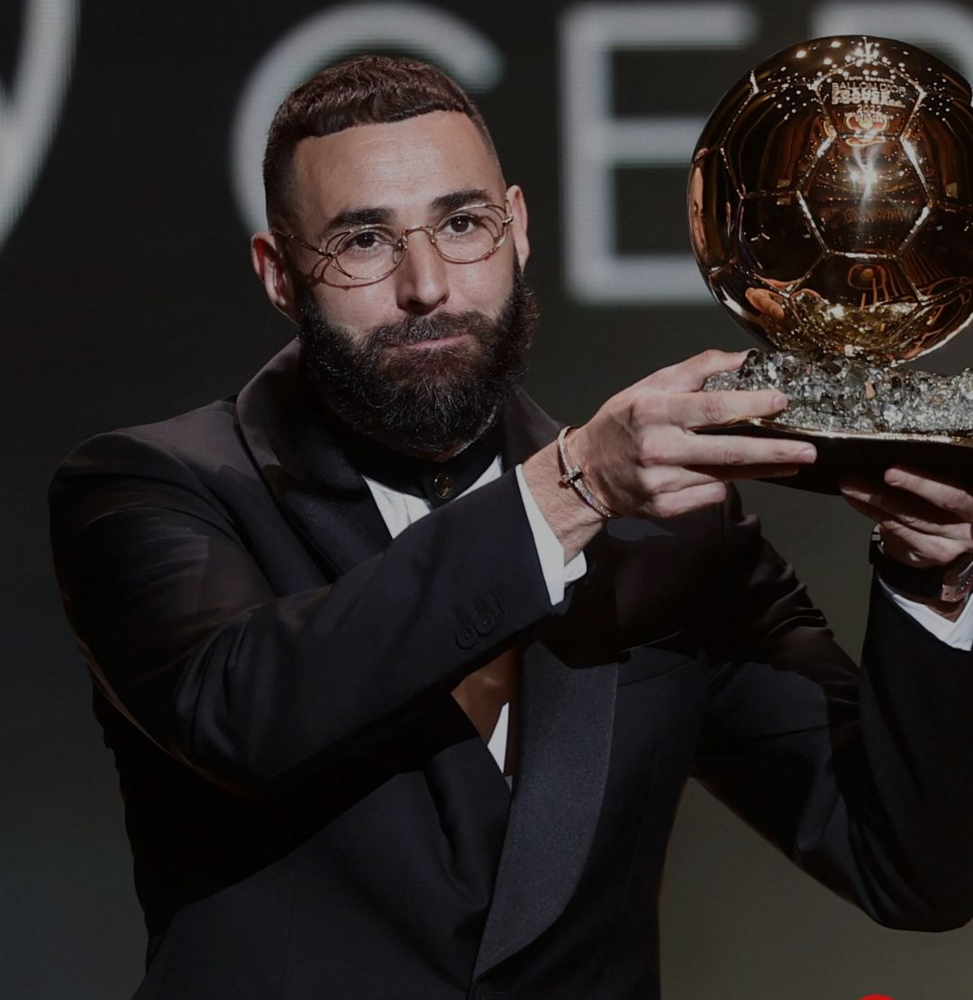

Club Career:
Lyon
Benzema was called up to the senior team for the first time under manager Paul Le Guen during the break leading up to the second half of the season. As is customary with new players arriving at Lyon, the young striker had to stand up and speak to his new teammates, which at that time included the likes of Michael Essien, Sylvain Wiltord, Florent Malouda and Eric Abidal.
While speaking, Benzema was subjected to jokes and laughter, which prompted the youngster to declare,"Do not laugh, I'm here to take your place." He made his professional debut on 15 January 2005 against Metz, appearing as a substitute for Pierre-Alain Frau.
Lyon won the match 2–0 as Benzema provided the assist of the second goal scored by Bryan Bergougnoux. He signed his first professional contract the same month, agreeing to a three-year deal.
After making three more appearances as a substitute, on 2 April Benzema made his first professional start in a 1–0 win over Lens. He finished the campaign with six appearances as Lyon won their fourth-straight league title.
Benzema began the 2005–06 season under the tutelage of new manager Gérard Houllier. Under Houllier, he struggled for meaningful minutes due to the presence of newly signed Brazilian striker Fred, as well as Sylvain Wiltord. Benzema made his season debut on 2 October 2005 in a league win over Rennes, appearing as a substitute.
On 6 December, he made his UEFA Champions League debut in Lyon's final group stage match against Norwegian club Rosenborg. On his competition debut, he scored his first professional goal in a 2–1 win.
A month later, Benzema scored his first professional double in a 4–0 win over Grenoble in the Coupe de France. On 4 March 2006, Benzema scored his first professional league goal against Ajaccio in a 3–1 win.
Benzema began earning more playing time in the 2006–07 season and made his competitive season debut in the 2006 Trophée des Champions against Paris Saint-Germain. In the French Supercup, Benzema converted a penalty which drew the match at 1–1. Lyon later won the league curtain-raiser 5–4 on penalties.
Benzema opened the league campaign on a quick note scoring in the team's first match of the season against Nantes. Three weeks later, on 26 August 2006, Benzema appeared as a substitute and scored two goals in a 4–1 away win over Nice.
He also converted two goals in the Champions League group stage against Romanian outfit Steaua București and Ukrainian club Dynamo Kyiv. After appearing regularly during the autumn campaign, on 10 November, Benzema suffered a severe thigh injury.
The injury resulted in the striker missing three months of action before returning in February 2007. Benzema failed to score a goal until the final league match of the season against Nantes as Lyon recorded its sixth consecutive league title.
.jpeg) For the 2007–08 season, with Florent Malouda, John Carew and Sylvain Wiltord all departing from the club, Benzema switched to the number 10 shirt and was inserted into the lead striker role. After forming a special relationship with new manager Alain Perrin, he responded with 31 goals in 51 games.
For the 2007–08 season, with Florent Malouda, John Carew and Sylvain Wiltord all departing from the club, Benzema switched to the number 10 shirt and was inserted into the lead striker role. After forming a special relationship with new manager Alain Perrin, he responded with 31 goals in 51 games.
He topped the league with 20 goals, scored four goals in the Champions League, one in the Coupe de la Ligue and totaled six goals in six Coupe de France matches, helping Lyon win their first ever double. Some of his more dazzling performances that season included a hat-trick against Metz on 15 September, an equalizing goal in the 90th minute from a free kick against Derby du Rhône rivals Saint-Étienne,and a goal against Lens that was nominated for goal of the season by fans.
In the Champions League, Benzema scored an important double against Rangers at Ibrox Stadium on the last match day of the group stage. The 3–0 victory assured Lyon progression to the knockout rounds.
In the knockout rounds, Lyon faced Manchester United and Benzema continued to score, this time it was from outside the penalty box in the first leg match which ended in a 1–1 draw and United eventually won the tie 1–2 on aggregate. Manchester United manager Sir Alex Ferguson and players praised Benzema for his performance. Lyon club president Jean-Michel Aulas later accused Ferguson of tapping-up Benzema.
On 13 March 2008, Benzema extended his contract with Lyon until 2013 with a one-year extension option. After signing his new contract, Benzema became one of the highest paid footballers in France.
For his efforts that season, he was named the Ligue 1 Player of the Year, selected to the Team of the Year and awarded the Trophée du Meilleur Buteur for being the league's top scorer. He won the 2008 Bravo Award given to the most outstanding young footballer playing in Europe, and was also shortlisted by French magazine France Football for the 2008 Ballon d'Or award, eventually won by Cristiano Ronaldo.
Benzema got off to a good start for the 2008–09 season, scoring twice in Lyon's opening league match against Toulouse. The following three weeks, he scored goals against Rhône-Alpes rivals Grenoble and Saint-Étienne and scored a goal against Nice, converting a penalty in the dying seconds. Lyon won all three matches.
As a result of his early goals, Lyon club president Jean-Michel Aulas quelled the many transfer rumors surrounding Benzema by placing a €100 million price tag on the striker. He was also nominated alongside Franck Ribéry to be featured on the French cover of the video game FIFA 09.
Real Madrid Journey
.jpeg) With the departure of Sergio Ramos to PSG, Benzema was promoted as Real Madrid's vice-captain for the 2021–22 season under Ancelotti.
With the departure of Sergio Ramos to PSG, Benzema was promoted as Real Madrid's vice-captain for the 2021–22 season under Ancelotti.
On 14 August, Benzema scored a brace against Alaves as Los Blancos kicked off the league season with a 1–4 away win to sit at the top of the table. Benzema's first half volley was the first official goal under Ancelotti in his second stint.Six days later, Benzema signed a contract extension with Real Madrid, keeping him at the club until 2023.
Benzema scored his first hat-trick in three seasons in a 5–2 win over Celta Vigo on 12 September as Madrid returned to the Bernabeu for the first time since March 2020. Wearing the armband, Benzema was the first Madrid captain to score a hat-trick since Raul in 2008.
One week later, Benzema and Vini Jr would combine twice in the last few minutes against Valencia at the Mestalla to complete a comeback to earn Madrid their first win at the Mestalla in four seasons. On 22 September, Benzema scored a brace and provided another two assists in a 6–1 win over Mallorca at the Bernabeu. Benzema's brace allowed him to become only the fourth Madrid player in history to score 200 La Liga goals after Di Stefano, Raul and Cristiano Ronaldo.
On 28 September, Benzema became the first the player in history to score in 17 consecutive Champions League seasons after scoring his first penalty in the competition in a 1–2 home loss against Sheriff in the group stage.
On 22 October, Benzema scored Madrid's 1000th Champions League goal at the Bernabéu against Shakhtar Donetsk. In the process, Benzema scored his 291st and 292nd goals for the club, making him their fourth highest all-time top scorer, overtaking Santillana.
With his goal against Sevilla in La Liga on 28 November, he became the highest French goalscorer in club football matches, overtaking Thierry Henry. On 8 January, Benzema scored his 300th goal for Madrid, converting a penalty in a 4–1 win at home in La Liga against Valencia.
On 9 March, he scored a hat-trick within 17 minutes in a remarkable comeback against Paris Saint-Germain in the Champions League round of 16. At the age of 34, Benzema became the oldest player to score a hat-trick in the Champions League era. With the three goals, Benzema brought his tally to 309, overtaking Alfredo Di Stéfano as Real Madrid's third-highest all-time goalscorer.
On 14 March, Benzema scored a brace in a La Liga match against Mallorca and broke Henry's record, becoming all-time top French goalscorer with 413 goals. On 6 April, he scored another hat-trick in the Champions League in a 3–1 away win over Chelsea in the first leg of the quarter-finals.
Benzema became only the second player (after Cristiano Ronaldo) to score back-to-back hat-tricks in successive Champions League knockout matches. One week later in the second leg at the Santiago Bernabéu, Benzema scored a 96th minute header in extra time which proved pivotal, as Madrid lost to Chelsea 2–3 on the night but qualified for the semi-finals 5–4 on aggregate.
On 30 April 2022, he helped Real clinch their 35th Spanish title with a goal in a 4–0 win against Espanyol at the Bernabéu.
On 4 May, he scored a decisive goal from the penalty spot in extra time in the second leg against Manchester City and helped Real Madrid reach their 17th European Cup final. By the end of the 2021–22 La Liga season, Benzema won his first Pichichi Trophy with 27 goals in 32 matches.
On 28 May, he won his fifth Champions League title after a 1–0 win over Liverpool in the final, and finished the tournament as top scorer with 15 goals in total. On 31 May, Benzema was named the inaugural Champions League player of the season.
On 13 August, he was nominated for the Ballon d'Or, widely considered a favourite to win it. In recognition of his performances that season, Benzema was awarded the Ballon d'Or on 17 October.
With the departure of Marcelo, Benzema was promoted to captain as the most senior member of the squad. By scoring in the 2022 UEFA Super Cup against Eintracht Frankfurt on 10 August 2022, Benzema brought his tally to 324 goals, overtaking Raúl as Real Madrid's all-time second-highest goalscorer.
On 2 April 2023, Benzema scored a hat-trick in 6 minutes and 30 seconds in a 6–0 win over Real Valladolid, to become the third fastest hat-trick scorer in his club's history in La Liga, only behind Pahiño who netted three goals in 4 minutes in 1950 and Fernando Hierro who scored them in 6 minutes in 1992.
Just three days later, he scored a back-to-back hat-trick in a 4–0 away victory against Barcelona in the Copa del Rey semi-finals, to become the second Real Madrid player to achieve this feat in El Clásico after Iván Zamorano in 1995 and the second Real Madrid player to score a hat-trick at the Camp Nou after Ferenc Puskás in 1963. On 6 May, Benzema was part of the team that won against Osasuna in the Copa del Rey final.
On 4 June, Real Madrid confirmed that Benzema would depart from the club following the conclusion of the 2022–23 season.
Benzema was given a rapturous reception by Madrid fans in his last game against Athletic Bilbao, in which he scored. Benzema was substituted for Luka Modric in the 74th minute, leaving the field to an ovation from the Madrid supporters.